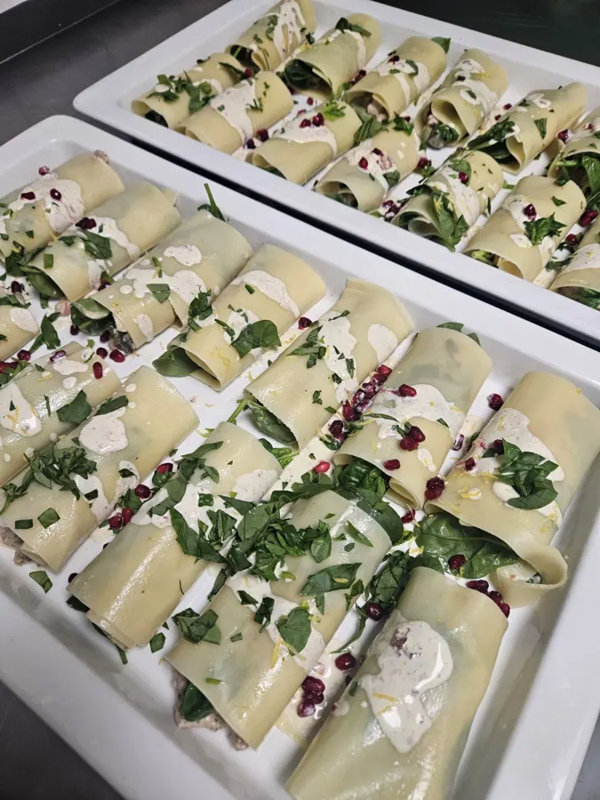
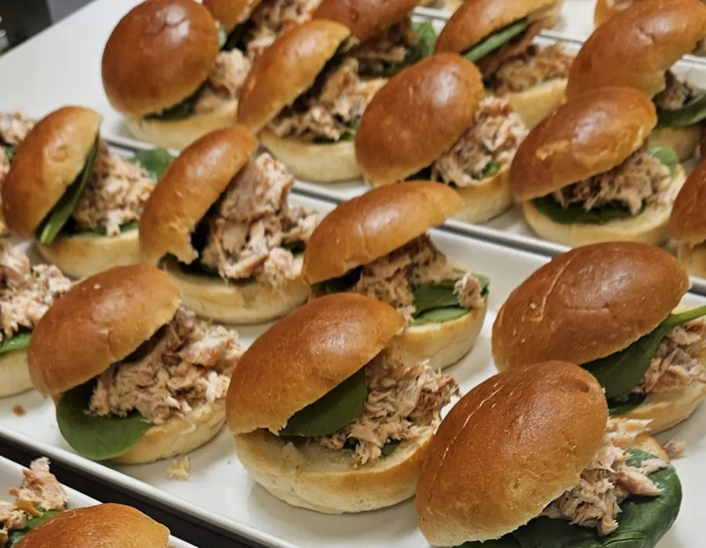
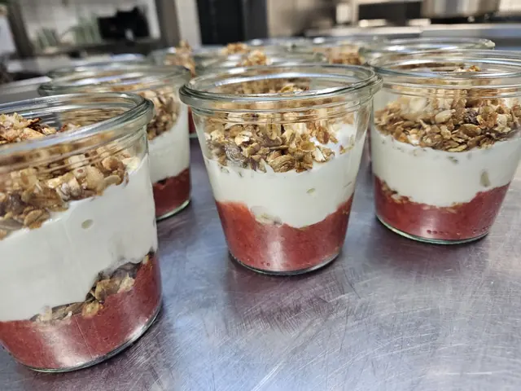

Café · Take away · Catering
Lavet fra bunden hver dag i Karlslunde Idrætsforening – til at tage med eller spise her.
I dag→Vores nye stolthed. En overdådig tapas med alt det gode – til hyggeaftener, gæster eller bare fordi I fortjener det.
Ønsker I noget til eller fra fadet? Ring til os nu på 93 99 58 58 – så skriver vi det på jeres bestilling.
Hos Spiis i Karlslunde laver vi smagfulde, hjemmelavede måltider til dig, der ikke altid har tid til at lave mad fra bunden. Menuen skifter løbende, så du altid får varieret og frisk mad lavet med kærlighed.
Du finder os i cafeteriet i Karlslunde Idrætsforening – for alle i og omkring Karlslunde, Greve og Solrød.
Velbekomme – fra hele holdet hos Spiis
Vi ELSKER at holde arrangementer. Vi sørger for maden, opdækningen og de små detaljer – så I kan være sammen med jeres gæster.



Fortæl os om jeres arrangement – dato, antal og ønsker. Vi glæder os allerede.
Book jeres selskab …eller ring til os på 93 99 58 58Karlslunde Idrætsforening
Kongens Enge 42
2690 Karlslunde
Cafeteriet i idrætsforeningen – gratis parkering lige uden for døren.
Dagens ret
Bestil
Vi har modtaget din bestilling og glæder os til at lave den til dig.
Ét sidste kig
Bestillingen er bindende. Kan du ikke komme, så ring og afbestil senest 1 time før – ellers opkræves beløbet, da maden allerede er forberedt og gjort klar.